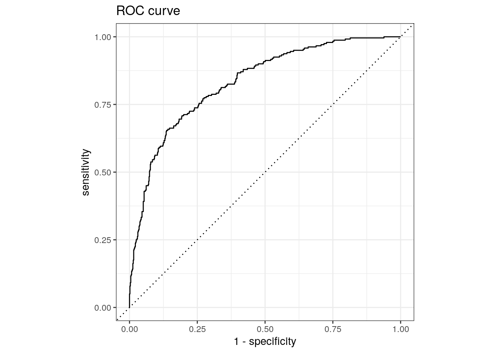
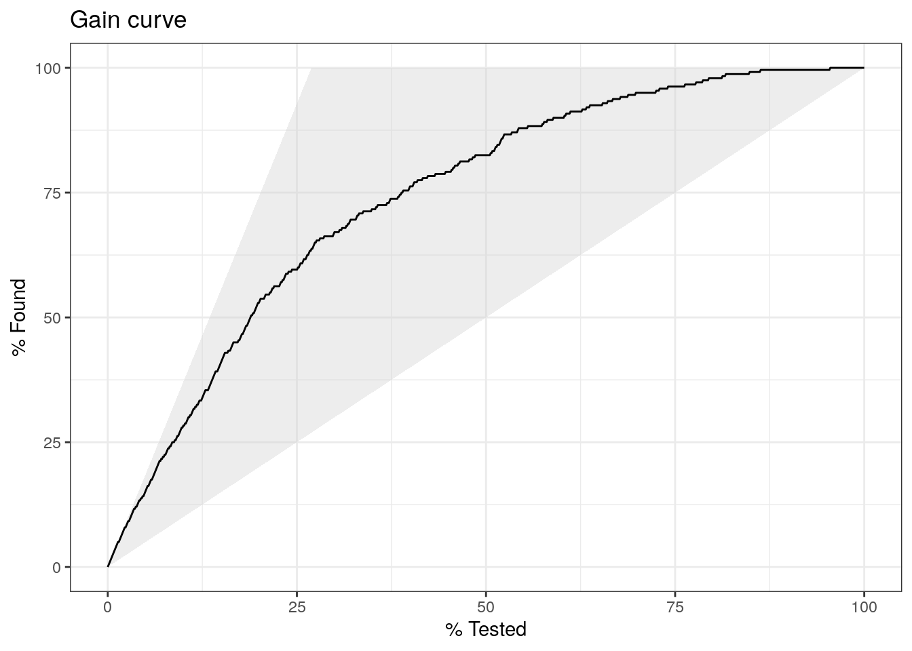
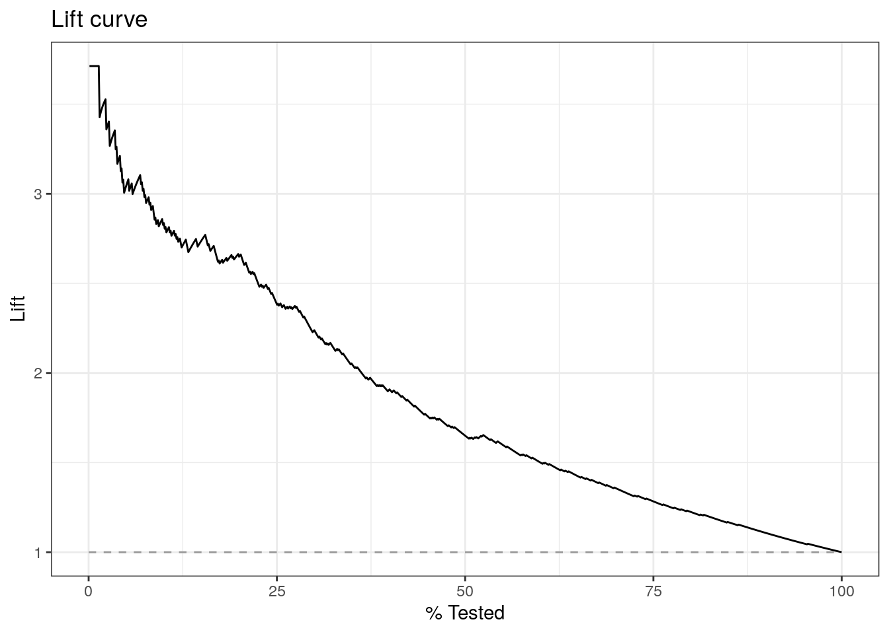

pacman::p_load(tidyverse, tidymodels, ranger, randomForest)31 Tidymodels
31.1 Giới thiệu
Các chương trước đã đề cập đến các kỹ thuật cũng như các phương pháp khác nhau trong việc xây dựng mô hình. Tuy nhiên, các phương pháp này trong R đang phải sử dụng trên nhiều packages khác nhau với nhiều các tham số khác nhau trên mỗi package. Ví dụ - randomForest với ntree, ranger với num.trees.
Trong những năm gần đây, R đang phát triển hệ sinh thái của tidymodels cho phép xây dựng machine learning pipeline theo phong cách của tidyverse. Hệ sinh thái của tidymodels bao gồm các package sau.
- Pre-processing: gồm có
rsample- hỗ trợ lấy sampling,recipes- hỗ trợ chuẩn hóa feature engineeringrsample: Phân chia train, testrecipes: Xử lý dữ liệu trước khi xây dựng mô hình qua ba bướcrecipe,prep,bake
- Xây dựng mô hình:
parsnip- chuẩn hóa các engine xây mô hình.- Tạo object về mô hình
- Lựa chọn engine
- Đưa mô hình vừa tạo với tập dữ liệu đã chuẩn hóa
- Đánh giá chất lượng mô hình:
yarsdstick - Tuning mô hình:
tune - Pipeline mô hình:
workflow
Thêm vào đó, tidymodels cho phép sử dụng các mô hình khác nhau với các engine (package) khác nhau như h2o, xgboost, lightgbm,… Do đó, tidymodels sẽ chuẩn hóa lại tầng interface) trong việc xây dựng mô hình.
Luồng làm việc tổng quan với tidymodels như sau.
31.2 Mô hình cơ bản với parsnip & recipes
31.2.1 Phân chia train/test
Sử dụng rsample để chia dữ liệu thành các tập train & test.
set.seed(1)
data("credit_data")
names(credit_data) <- names(credit_data) %>% tolower
# Chia train vs test
split <- initial_split(credit_data, prop = 8/10)
credit_train <- training(split)
credit_test <- testing(split)
# Sample
credit_train %>% head status seniority home time age marital records job expenses income
1 bad 0 rent 60 39 single yes fixed 35 NA
2 bad 10 other 12 31 married no others 90 65
3 good 2 parents 24 19 single no partime 35 50
4 good 20 owner 60 49 married no fixed 60 130
5 good 15 owner 36 40 married no fixed 60 230
6 bad 1 parents 60 43 married yes fixed 90 179
assets debt amount price
1 0 0 2350 2679
2 0 0 225 375
3 50000 0 900 1472
4 4000 0 1100 1738
5 8500 480 700 1400
6 0 0 1600 189631.2.2 Feature Enginneer
Với bước feature engineering, tidymodels cho phép thực hiện tính toán feature, dựa theo 3 bước sau:
- Bước 1: Tạo object
recipes- từ tập dữ liệu train - Bước 2: Tạo các bước chuẩn hóa dữ liệu với nhóm hàm
step_x - Bước 3: Áp dụng các bước chuẩn hóa vào tập
train&testvới hàmbake
# Tỷ lệ missing data
map_dbl(credit_train, function(x) mean(!is.na(x))) status seniority home time age marital records job
1.0000000 1.0000000 0.9985967 1.0000000 1.0000000 1.0000000 1.0000000 0.9994387
expenses income assets debt amount price
1.0000000 0.9155206 0.9896155 0.9963514 1.0000000 1.0000000 31.2.2.1 Tạo object recipes
rec_obj <- recipe(status ~ ., data = credit_train)
rec_objBước này chỉ tạo & sử dụng metadata từ mô hình
31.2.2.2 Chuẩn hóa dữ liệu
# Bước 1: Khai báo các bước
feature_impute <- rec_obj %>%
# Impute missing data với median
step_impute_median(all_numeric_predictors()) %>%
# Impute mode với biến category
step_impute_mode(all_nominal_predictors())
feature_impute
# Bước 2: Tính toán các chỉ số từ tập train
train_rec <- prep(feature_impute, training = credit_train)
train_rec
# Bước 3: Áp dụng impute vào tập train & test
train_data <- bake(train_rec, new_data = credit_train)
test_data <- bake(train_rec, new_data = credit_test)Sau khi đã impute toàn bộ dữ liệu mới, cả tập train & test đã có đầy đủ dữ liệu.
map_dbl(train_data, function(x){sum(!is.na(x))/length(x)})seniority home time age marital records job expenses
1 1 1 1 1 1 1 1
income assets debt amount price status
1 1 1 1 1 1 map_dbl(test_data, function(x){sum(!is.na(x))/length(x)})seniority home time age marital records job expenses
1 1 1 1 1 1 1 1
income assets debt amount price status
1 1 1 1 1 1 31.2.3 Xây dựng mô hình
- Xác định mô hình - xem xét cả 2 engine với
rangervàrandomForest
rf_ranger_model <- rand_forest(trees = 200, mtry = 4, mode = "classification") %>%
# set engine
set_engine("ranger")
rf_ranger_modelRandom Forest Model Specification (classification)
Main Arguments:
mtry = 4
trees = 200
Computational engine: ranger ranger_fit <- rf_ranger_model %>%
fit(status ~ ., data = train_data)
ranger_fitparsnip model object
Ranger result
Call:
ranger::ranger(x = maybe_data_frame(x), y = y, mtry = min_cols(~4, x), num.trees = ~200, num.threads = 1, verbose = FALSE, seed = sample.int(10^5, 1), probability = TRUE)
Type: Probability estimation
Number of trees: 200
Sample size: 3563
Number of independent variables: 13
Mtry: 4
Target node size: 10
Variable importance mode: none
Splitrule: gini
OOB prediction error (Brier s.): 0.146603 rf_random_model <- rand_forest(trees = 200, mtry = 4, mode = "classification") %>%
# set engine
set_engine("randomForest")
rf_random_modelRandom Forest Model Specification (classification)
Main Arguments:
mtry = 4
trees = 200
Computational engine: randomForest rf_fit <- rf_random_model %>%
fit(status ~ ., data = train_data)
rf_fitparsnip model object
Call:
randomForest(x = maybe_data_frame(x), y = y, ntree = ~200, mtry = min_cols(~4, x))
Type of random forest: classification
Number of trees: 200
No. of variables tried at each split: 4
OOB estimate of error rate: 21.33%
Confusion matrix:
bad good class.error
bad 512 502 0.4950690
good 258 2291 0.101216231.2.4 Dự báo & đánh giá chất lượng mô hình
result_ranger <- bind_cols(predict(ranger_fit, test_data, type = "prob"),
predict(ranger_fit, test_data))
result_ranger %>% head# A tibble: 6 × 3
.pred_bad .pred_good .pred_class
<dbl> <dbl> <fct>
1 0.142 0.858 good
2 0.181 0.819 good
3 0.248 0.752 good
4 0.497 0.503 good
5 0.0616 0.938 good
6 0.0507 0.949 good - Đánh giá chất lượng mô hình trên
yarstick
library(yardstick)
result <- result_ranger %>%
mutate(truth = test_data$status)
result %>% head# A tibble: 6 × 4
.pred_bad .pred_good .pred_class truth
<dbl> <dbl> <fct> <fct>
1 0.142 0.858 good good
2 0.181 0.819 good good
3 0.248 0.752 good good
4 0.497 0.503 good bad
5 0.0616 0.938 good good
6 0.0507 0.949 good good # Chỉ số đơn giản
result %>%
metrics(truth, .pred_class)# A tibble: 2 × 3
.metric .estimator .estimate
<chr> <chr> <dbl>
1 accuracy binary 0.817
2 kap binary 0.496# AUC
result %>%
roc_auc(truth, .pred_bad)# A tibble: 1 × 3
.metric .estimator .estimate
<chr> <chr> <dbl>
1 roc_auc binary 0.831Ta có thể vẽ các đường ROC, GAIN và LIFT như sau
theme_set(theme_minimal())
# ROC
result %>%
roc_curve(truth, .pred_bad) %>%
autoplot() +
labs(title = "ROC curve")
# GAIN
result %>%
gain_curve(truth, .pred_bad) %>%
autoplot() +
labs(title = "Gain curve")
# ROC
result %>%
lift_curve(truth, .pred_bad) %>%
autoplot() +
labs(title = "Lift curve")
31.3 Pipeline
Với mô hình random forest ở trên, ta có thể kết hợp dạng workflow theo 4 bước:
- Tạo
workflow() - Thêm
recipevớiadd_recipe - Thêm
modelvớiadd_model - Fit mô hình với
fit
Note
workflow() %>%
add_model() %>%
add_formula() %>% #optional
add_recipe() %>%
fitXem ví dụ sau
# Bước 1: Feature df
feature_impute <- recipe(status ~ ., data = credit_train) %>%
# Impute missing data với median
step_impute_median(all_numeric_predictors()) %>%
# Impute mode với biến category
step_impute_mode(all_nominal_predictors()) %>%
prep()
# Bước 2: Tạo model
rf_ranger_model <- rand_forest(trees = 200, mtry = 4, mode = "classification") %>%
# set engine
set_engine("ranger")
# Bước 3: Tạo workflow
ranger_flow <- workflow() %>%
add_recipe(feature_impute) %>%
add_model(rf_ranger_model)
# Bước 4: Tạo model fit
ranger_fit <- fit(ranger_flow, credit_train)
# Bước 5: Dự báo
predict(ranger_fit, credit_test, type = "prob") %>%
head# A tibble: 6 × 2
.pred_bad .pred_good
<dbl> <dbl>
1 0.186 0.814
2 0.151 0.849
3 0.250 0.750
4 0.488 0.512
5 0.0919 0.908
6 0.0482 0.95231.4 Tuning
Ta có thể tune - tìm ra các giá trị của hyperparameter để mô hình có thể đạt chất lượng tốt nhất. Khi tuning, thay vì xác định cụ thể các tham số, ta để tune()
library(xgboost)
xgb_spec <-boost_tree(
trees = 200,
tree_depth = tune(),
min_n = tune(),
loss_reduction = tune(), ## first three: model complexity
sample_size = tune(),
mtry = tune(), ## randomness
learn_rate = tune() ## step size
) %>%
set_engine("xgboost") %>%
set_mode("classification")
xgb_specBoosted Tree Model Specification (classification)
Main Arguments:
mtry = tune()
trees = 200
min_n = tune()
tree_depth = tune()
learn_rate = tune()
loss_reduction = tune()
sample_size = tune()
Computational engine: xgboost Tạo workflow - tạm bỏ qua bước feature_impute
xgb_wf <- workflow() %>%
add_formula(status ~.) %>%
add_model(xgb_spec)
xgb_wf══ Workflow ════════════════════════════════════════════════════════════════════
Preprocessor: Formula
Model: boost_tree()
── Preprocessor ────────────────────────────────────────────────────────────────
status ~ .
── Model ───────────────────────────────────────────────────────────────────────
Boosted Tree Model Specification (classification)
Main Arguments:
mtry = tune()
trees = 200
min_n = tune()
tree_depth = tune()
learn_rate = tune()
loss_reduction = tune()
sample_size = tune()
Computational engine: xgboost 31.4.1 Khởi tạo trước các mẫu parameter
Tạo trước random bộ 20 parameter
xgb_grid <- grid_latin_hypercube(
tree_depth(),
min_n(),
loss_reduction(),
sample_size = sample_prop(),
finalize(mtry(), credit_train),
learn_rate(),
size = 20
)
xgb_grid# A tibble: 20 × 6
tree_depth min_n loss_reduction sample_size mtry learn_rate
<int> <int> <dbl> <dbl> <int> <dbl>
1 2 14 6.91e- 9 0.570 11 2.79e- 7
2 6 7 3.02e- 7 0.848 4 1.12e- 5
3 7 34 6.06e- 1 0.414 2 1.07e- 6
4 3 26 3.61e- 4 0.425 10 2.82e- 8
5 14 23 7.05e- 8 0.598 2 1.64e- 9
6 4 22 4.83e+ 0 0.316 8 2.36e-10
7 12 39 1.60e- 2 0.162 5 1.48e- 3
8 11 37 1.83e- 7 0.231 6 3.58e- 6
9 4 27 4.61e-10 0.928 8 1.49e- 4
10 14 12 7.94e- 6 0.701 7 4.89e- 4
11 5 10 1.81e- 4 0.966 11 5.21e- 5
12 5 8 1.55e- 1 0.239 9 1.05e- 2
13 8 31 1.98e- 1 0.465 12 2.67e- 6
14 9 3 6.82e- 3 0.657 4 1.00e- 7
15 1 17 2.58e- 5 0.130 3 1.67e- 2
16 12 20 2.35e- 3 0.340 11 1.37e- 8
17 11 17 2.31e- 9 0.733 6 3.02e- 9
18 7 4 1.03e+ 1 0.789 4 5.32e-10
19 14 30 1.86e- 6 0.891 13 4.08e- 2
20 10 34 3.41e-10 0.523 13 1.99e- 331.4.2 Tuning
credit_boostrap <- bootstraps(credit_train, times = 5)
xgb_res <- tune_grid(
xgb_wf,
resamples = credit_boostrap,
grid = xgb_grid,
control = control_grid(save_pred = TRUE)
)
xgb_res# Tuning results
# Bootstrap sampling
# A tibble: 5 × 5
splits id .metrics .notes .predictions
<list> <chr> <list> <list> <list>
1 <split [3563/1307]> Bootstrap1 <tibble [40 × 10]> <tibble> <tibble>
2 <split [3563/1298]> Bootstrap2 <tibble [40 × 10]> <tibble> <tibble>
3 <split [3563/1311]> Bootstrap3 <tibble [40 × 10]> <tibble> <tibble>
4 <split [3563/1303]> Bootstrap4 <tibble [40 × 10]> <tibble> <tibble>
5 <split [3563/1293]> Bootstrap5 <tibble [40 × 10]> <tibble> <tibble> 31.4.3 Đánh giá kết quả mô hình
show_best(xgb_res, "roc_auc")# A tibble: 5 × 12
mtry min_n tree_depth learn_rate loss_reduction sample_size .metric
<int> <int> <int> <dbl> <dbl> <dbl> <chr>
1 13 30 14 0.0408 0.00000186 0.891 roc_auc
2 9 8 5 0.0105 0.155 0.239 roc_auc
3 4 3 9 0.000000100 0.00682 0.657 roc_auc
4 4 7 6 0.0000112 0.000000302 0.848 roc_auc
5 7 12 14 0.000489 0.00000794 0.701 roc_auc
# ℹ 5 more variables: .estimator <chr>, mean <dbl>, n <int>, std_err <dbl>,
# .config <chr>best_auc <- select_best(xgb_res, "roc_auc")
best_auc# A tibble: 1 × 7
mtry min_n tree_depth learn_rate loss_reduction sample_size .config
<int> <int> <int> <dbl> <dbl> <dbl> <chr>
1 13 30 14 0.0408 0.00000186 0.891 Preprocessor1_Mo…31.4.4 Xây dựng lại mô hình cuối
final_xgb <- finalize_workflow(xgb_wf, best_auc)
final_xgb══ Workflow ════════════════════════════════════════════════════════════════════
Preprocessor: Formula
Model: boost_tree()
── Preprocessor ────────────────────────────────────────────────────────────────
status ~ .
── Model ───────────────────────────────────────────────────────────────────────
Boosted Tree Model Specification (classification)
Main Arguments:
mtry = 13
trees = 200
min_n = 30
tree_depth = 14
learn_rate = 0.0407919585102803
loss_reduction = 1.86268524986285e-06
sample_size = 0.890603252997389
Computational engine: xgboost # Xây dựng mô hình
xgb_fit <- final_xgb %>%
fit(credit_train)
result_xgb <- bind_cols(predict(xgb_fit, credit_test, type = "prob"),
predict(xgb_fit, credit_test)) %>%
mutate(truth = credit_test$status)
result_xgb %>%
roc_auc(truth, .pred_bad)# A tibble: 1 × 3
.metric .estimator .estimate
<chr> <chr> <dbl>
1 roc_auc binary 0.85331.5 Tài liệu tham khảo
- https://tidymodels.github.io/recipes/
- https://tidymodels.github.io/rsamples/
- https://tidymodels.github.io/parsnip/
- https://tidymodels.github.io/yardstick/
- https://www.tidyverse.org/articles/2018/11/parsnip-0-0-1/
- https://tidymodels.github.io/parsnip/reference/boost_tree.html
- https://www.tmwr.org/
- Tidy models workshop https://workshops.tidymodels.org/